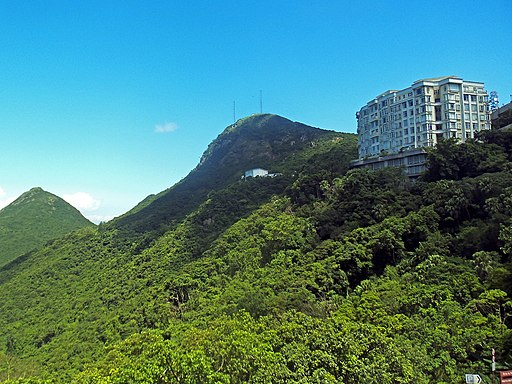
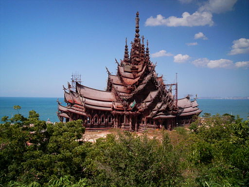
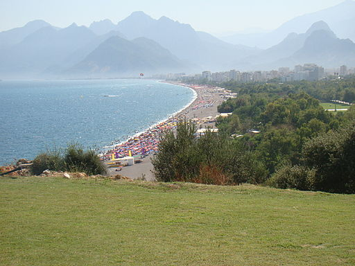

Click the markers to view low/peak seasons for each destination! This data was taken from Mastercard and their Global Report (2019).Looking at other websites this data may fluctuate.
The chart above has been included to show you the priciest destinations to the cheapest quickly. The data above has been based on the average amount an individual spends 24 hours at that destination. You can use this to quickly rule out the places that may be out of your budget.
If your priority is a less crowded romantic getaway, or maybe you want to explore the destinations that are not "insta" famous. This chart allows you to see where most of the foot traffic leads. This information was also sourced from Mastercard.
Eiffel Tower, Paris, France. Image source: Wikimedia Commons: Public Domain.

The London Eye, London, UK. Image source: Wikimedia Commons: CC BY-SA 3.0.

Sagrada Familia, Barcelona, Spain. Image source: Wikimedia Commons: CC BY-SA 2.0.

Cap de Formentor, Palma de Mallorca, Spain. Image source: Wikimedia Commons: CC BY-SA 4.0.
Galleria Vittorio Emanuele II, Milan, Italy. Image source: Wikimedia Commons: CC BY-SA 3.0.

Gardens by the Bay, Singapore. Image source: Wikimedia Commons: CC BY-SA 3.0.
Andaman Sea, Phuket, Thailand. Image source: Wikimedia Commons: CC BY-SA 4.0.

Osaka Castle, Osaka, Japan. Image source: Wikimedia Commons: CC BY-SA 4.0.
Victorias Peak, Hong Kong SAR. Image source: Wikimedia Commons: CC BY-SA 3.0.
Shibuya Crossing, Japan, Tokyo. Image source: Wikimedia Commons: CC BY-SA 2.0.
The Grand Palace, Bangkok, Thailand. Image source: Wikimedia Commons: CC BY-SA 3.0.

Uluwatu Temple, Bali, Indonesia. Image source: Wikimedia Commons: CC BY-SA 4.0.
Temple of Truth, Pattaya, Thailand. Image source: Wikimedia Commons: CC BY-SA 3.0.

Gyeongbokgung Palace, Seoul, South Korea. Image source: Wikimedia Commons: CC BY-SA 4.0.
Mecca, Makkah, Saudi Arabia. Image source: Wikimedia Commons: CC BY-SA 2.0.

Hagia Sophia Mosque, Istanbul, Turkey. Image source: Wikimedia Commons: CC BY-SA 3.0.
Konyaaltı Beach, Anatalya, Turkey. Image source: Wikimedia Commons: CC0.
Burj Khalifa, Dubai, UAE. Image source: Wikimedia Commons: CC BY-SA 3.0.
Empire State Building, New York City, New York. Image source: Wikimedia Commons: CC BY-SA 2.0.
This page was created by Lexi Lutz.


{kind=link}
{kind=link}
{kind=link}
{kind=link}
{kind=link}
{kind=link}
{kind=link}
.jpg){kind=link}
{kind=link}
{kind=link}
.jpg){kind=link}
{kind=link}
{kind=link}
{kind=link}
{kind=link}
{kind=link}
{kind=link}
{kind=link}